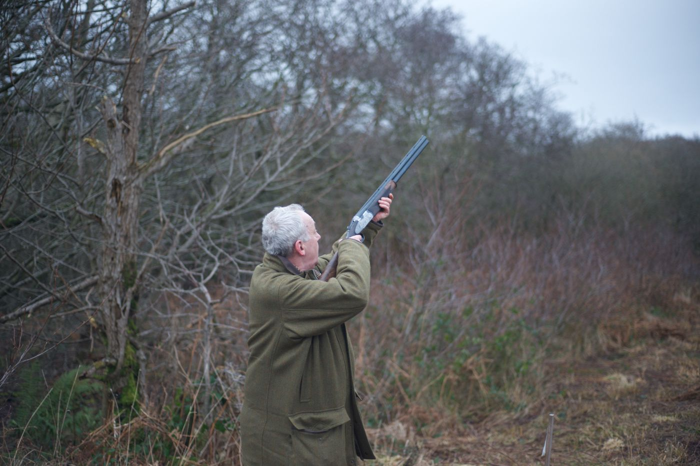
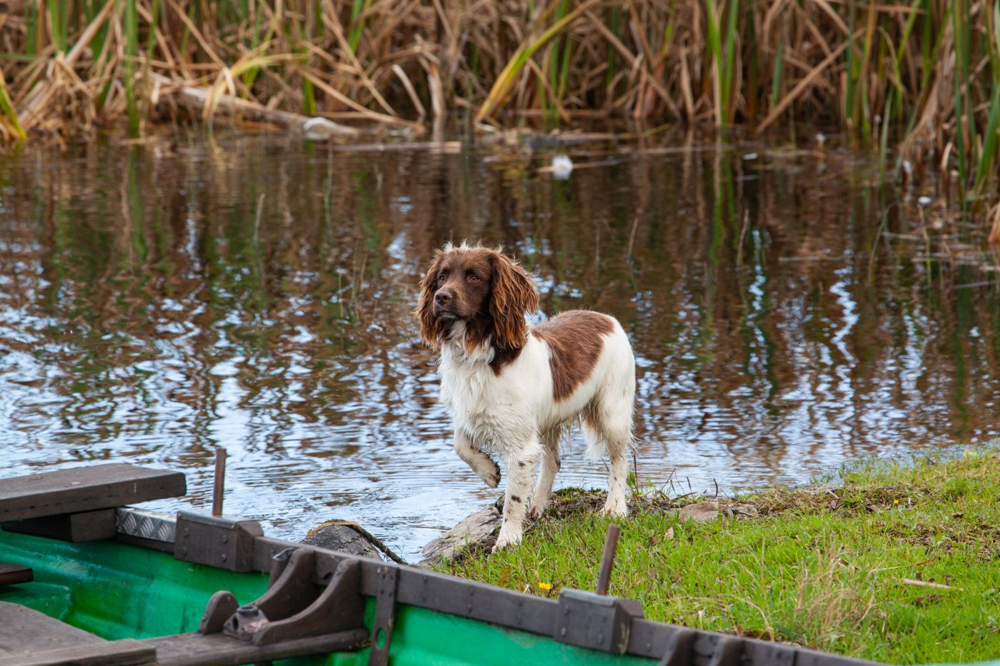

Guided shooting
Launching firstTime on Yorkshire farmland with an experienced, safety-focused guide. Suitable for those new to the sport as well as those who already know their way around.
Fieldsports & Country Skills
Where we start. Careful, guided fieldsports — and a wider set of country skills for anyone curious about the outdoors.


Patience, skill and a good dog.
We’re not taking bookings yet. This page describes what we’re building. Register your interest and we’ll tell you when there’s something real to book.
Fieldsports
Fieldsports are at their best when they’re about craft, safety and stewardship of the land — not trophies. Our approach is small groups, clear briefings, and plenty of patience for beginners.
Time on Yorkshire farmland with an experienced, safety-focused guide. Suitable for those new to the sport as well as those who already know their way around.
A friendly first go at clay shooting: a full safety briefing, patient coaching, and a chance to find out whether it’s for you.
A quieter, more contemplative side of fieldsports, offered in time as we build relationships with the right land and people.
Country skills
Hands-on days for individuals, families and groups. Some sit beside our fieldsports; some are simply good ways to spend a day outside.
A classic skill that suits nearly every age: instruction, targets and the quiet satisfaction of a gold.
Fire-lighting, shelter-building and safe knife skills — the fundamentals of being comfortable outdoors.
Hedgerow and wild food, gently guided: what to look for, what to leave, and what to do with it afterwards.
Off-the-beaten-track rides across our land, with a proper briefing and kit. An easy way to see the countryside from a different angle.
Quiet time with a camera, using hides and good light to watch and photograph the wildlife and landscape of the area.
Foliage crafts through the year: come away with something handmade, and a few new tricks with hedgerow greenery.
Looking for cooking, honey or a day with the chicks? Those live over on Field to Fork. Planning something for a group or a team? See Weddings & Events.
Tell us which activities interest you and we’ll keep you posted as they come to life.